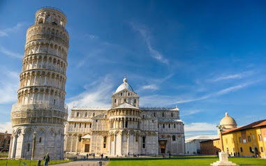
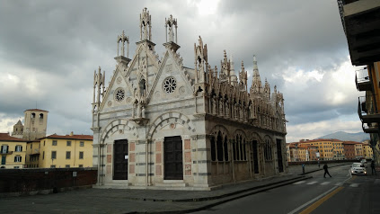
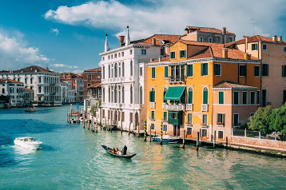

|
لینک ها
google
yahoo
github
gmail
gradient
|

برج کج پیزا (به ایتالیایی: Torre pendente di Pisa) در شهر پیزا در ناحیه توسکانی ایتالیا با اینکه تنها
برج کج جهان نیست، ولی از شناختهشدهترین آنها است. این برج ۵۶٫۷۰ متر بلندی و ۱۴۵۰۰ تن جرم دارد این برج، نشان
اصلی شهر پیزا است و در ۱۹۸۷ نیز در فهرست میراث جهانی یونسکو ثبت شد
ok
|

| نام |
نام خانوادگی |
سن |
| حنانه |
ملکی |
18 |
| تینا |
ترابی |
17 |
| مهسا |
ستاری |
18 |
| نرگس |
حقانی |
16 |
| سارا |
کریمی |
18 |
ok
|

کولوسئوم یا کلینزه، همچنین به عنوان Amfiteater Flavian معروف است، آمفی تئاتر بیضی در
مرکز شهر رم، ایتالیا. ساخته شده از سنگ تراورتن، توف، و آجر مواجه با بتن، آن است
بزرگترین آمفیت تئاتر که تا کنون ساخته شده است. کولوسئوم فقط در شرق مجمع روم قرار دارد
ok
|